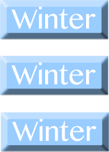

Zoe Kwong
Our website serves as an information center for parents and students who are confused or unaware of the AIS uniform policy.
Mr. Hardisty is our client for this project. During our meeting, we discussed about the objectives for the website. He had lots of ideas including a simple interface that is userfriendly, lots of visual images, and it must look professional. If our website came out successful he said, he might include it in the actual school website.
For parents or students to check out a detailed school uniform/ free dress policy.

We chose this flowchart idea because only has three pages with little complexity. Since our objectives were "user-friendly" and "less than 4 pages", this flowchart seems to be the most ideal choice.
This flowchart was a less organized version of the chosen flowchart (above). However it includes two more subpages which can be too abundant.
This flowchart has three pages however, it does not show a clear layout of each pages.
Our theme is baised on AIS, and simplistic which helps the student to recieve specific information.
Times New Roman is the font we used for our heading/title.
Black will be the colour used for out heading or title.
Comic-sans was the font we used for the description of our content page.
Black will be the colour we use for the description of our content page.
We will place our navigation bar on the top left side of our page.
The content that will be placed on the navigation bar are our sub-pages.
Yes, the navigation bar will be on every page.
It hovers upon the page that has been clicked on, and it will have a subtitle.
We learnt in class to create buttons which can become the additional texture for our pages.
